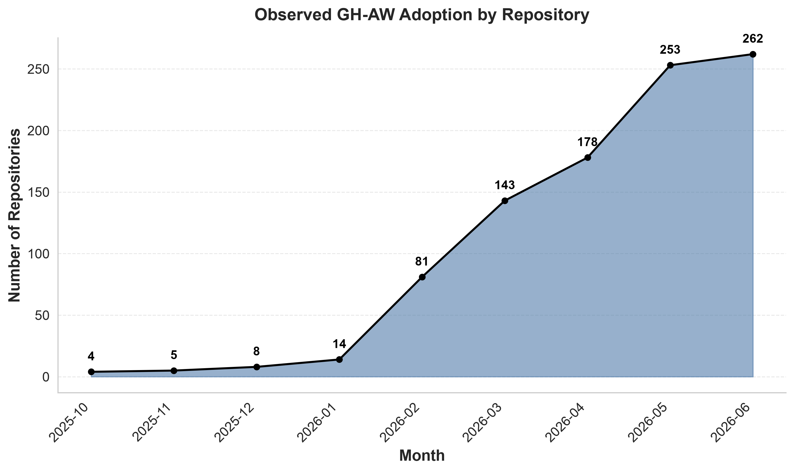
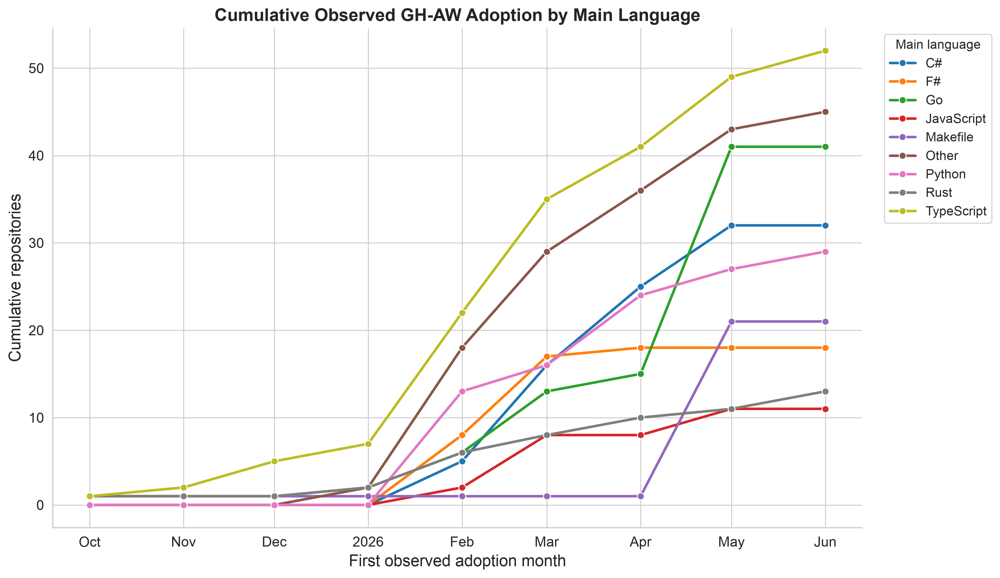
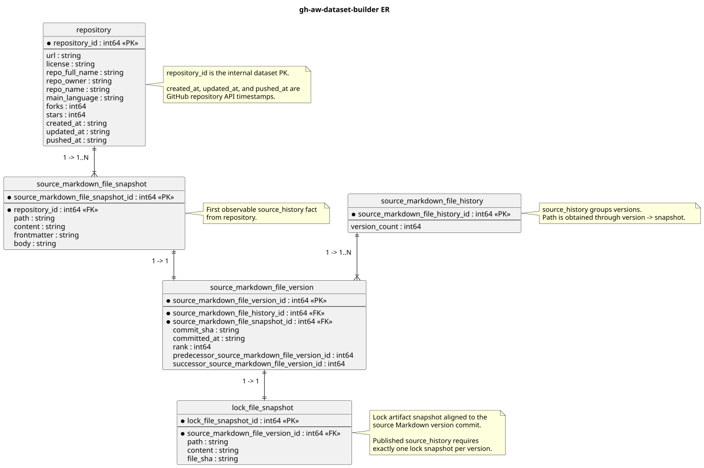

Load GHAW-H
Read all five tables and construct the core analytical joins.
Open in ColabGHAW-H connects repository metadata with the observable history of natural-language workflow specifications and their aligned lock files. It contains 262 repositories, 604 source histories, 2,820 Markdown versions, and 2,820 lock snapshots.



Read all five tables and construct the core analytical joins.
Open in ColabInspect coverage and reproduce the cumulative adoption figure.
Open in ColabCompare adoption across repository language ecosystems.
Open in ColabExplore version depth, history span, and temporal change.
Open in ColabIf you use GHAW-H, please cite the dataset. Paper-specific bibliographic details will be added when available.
@dataset{ghaw_h_2026,
title = {GHAW-H: A Dataset of GitHub Agentic Workflow Histories},
year = {2026},
url = {https://huggingface.co/datasets/pavtch/GHAW-H},
version = {0.1.0}
}Affiliated institutions